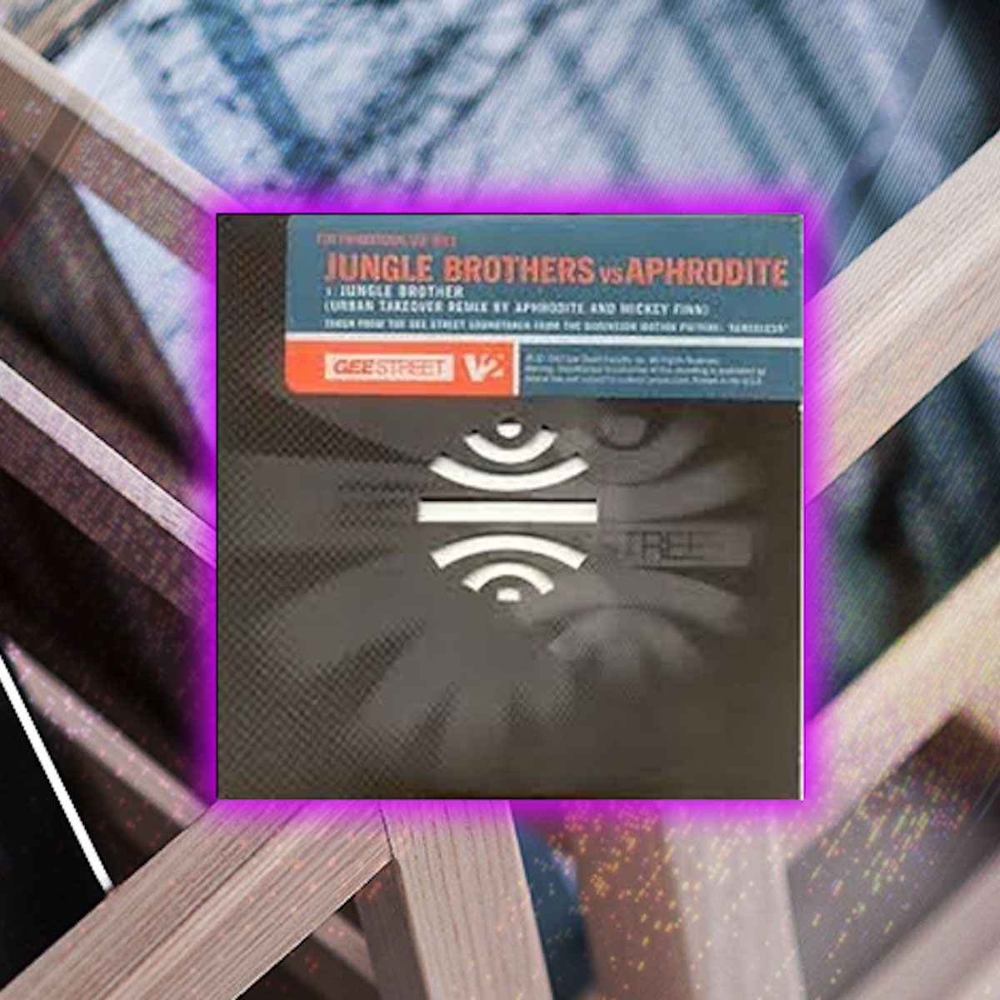

From The Crates: Jungle Brothers vs. Aphrodite "Jungle Brother" (Urban Takeover Remix)
{kind=link}

The birth of our underground brand Factory 93 not only brought on an adrenaline rush reminiscent of the renegade warehouse era of raving—on which Insomniac was founded—but it also had us thinking back to all the people, places and parties that made this whole operation possible. And with that came a burning desire to crack open our collection and dust off the classic records we couldn’t live without. Through our From the Crates series, we’ll be breaking out both seminal and obscure cuts alike, imparting some knowledge in the process.
Anyone who recalls this mighty record dropping in the mid ‘90s will remember it ringing out loudly as one of the mightiest fusions of hip-hop and drum & bass ever to storm club culture. It was also a milestone, in terms of these two styles growing indistinguishably interwoven. Not to mention, Aphrodite’s unforgettable remix simply ranks as one of the most fun club records of all time.
The “Urban Takeover Remix” originally surfaced on the B-side of the European 12-inch issue of “Jungle Brother (True Blue)” in 1997. At the time, it was a rarity, in terms of a drum & bass remix commissioned by a record label—as opposed to a sly, unofficial bootleg. A year later, it was released under the Jungle Brothers vs. Aphrodite moniker, more accurately reflecting how it genetically fused the talents of the two acts.
The remix emerged in a climate where the early percussive sounds of ‘90s jungle were mutating into the broader genre of swift-tempo grooves we know as drum & bass. Welsh producer Aphrodite had recently complemented his own Aphrodite Recordings label with the launch of the new Urban Takeover imprint alongside Micky Finn, who joined him in the studio to form the team behind the famed Urban Takeover remixes. The pair were among the early innovators who pushed the novel idea of incorporating hip-hop into drum & bass, which was previously centered almost entirely around the use of reggae and dancehall samples.
“There weren’t many other producers doing it at the time,” Aphrodite, aka Gavin King, confirmed when Insomniac managed to track him down for a brief chat about his vintage, gold-standard remix.
The genius of his and Finn’s Urban Takeover Remix is owed largely to its two-minute intro, paced at a slower hip-hop tempo. Featuring a variation on the original’s single midtempo breaks, it lulls for an exhilarating eternity as it builds toward its absurdly powerful drop, which draws on the maxims of “jump-up” drum & bass tracks that turbocharge the tempo at the drop, encouraging a feverish dancefloor response.
Prior to this tempo boost was a chance to put Jungle Brothers’ charismatic rap in the spotlight:
10th round
And still catching mad beatdowns
So I retreat back to my old stomping ground
Regroup and lounge
Put on a couple of pounds
And make plans to create the raw, homegrown sounds
It amounts to a powerful statement of intent from a trio of true NYC originators. “Say what?” the Jungle Brothers ask as the breaks halt for the buildup, which Aphrodite channels into a furious windup that climaxes with the record’s thundering drop.
‘Cause I’m a jungle brother // true blue brother
That powerful, elastic bassline that eventually joins the Jungle Brothers in the spotlight stands tall alongside the trio in terms of its charismatic personality, one of those all-time jump-up drum & bass grooves, packing enough wobbling momentum to get entire clubs swaying in unison. It was devastatingly heavy on the dancefloor, particularly in contrast to the relatively subdued hip-hop breaks that preceded it.
It turns out that this iconic, unforgettable bassline actually had a previous life as an unassuming dubplate that Aphrodite had cut on the fly in the studio so he could throw it into his sets on the weekend.
“It was the kind of track I’d make when I just wanted something exclusive for the weekend—a quick track I might produce on a Friday afternoon, and the sort of thing I’d put on a CD or USB stick these days. I debuted it at a German festival, and I’d say it went down rather well.”
It wasn’t until later, when the Urban Takeover team decided to throw this bassline into the mix with the Jungle Brothers, that magic truly happened. As much as it represents drum & bass mayhem in full swing, the Jungle Brothers’ swag is central to its appeal, as is the innovative way Aphrodite employs that swag.
“The great thing about producing a remix with a powerful vocal is that once you get the vocals positioned in the right place, the track almost writes itself for you. The verses just beautifully glide over the bassline.”
That said, positioning a rap properly into a 16- or 32-bar structure of a dance record isn’t necessarily an easy task for a producer. The functional response to this is another central component to the genius of the Jungle Brothers vs. Aphrodite alliance: rolling key words and phrases repeatedly.
JB is the initial // Got to keep it // Got to keep it // Got to keep it // Got to keep it // Got to keep it official
The Urban Takeover team selectively cut-and-pasted vocal grabs, slicing and reassembling like a jigsaw, so the rap worked perfectly in unison with the fast-paced grooves they’d assembled. Done to extremely memorable effect, it’s likely fans will remember exactly how many times a phrase was looped.
If something go down // we rearrange // we rearrange // we rearrange // we rearrange // we rearrange contracts
“Once you’ve decided a particular record will be arranged in a certain bar structure, it’s simply a matter of going into that verse and deciding creative ways to make it longer. Which parts sound good repeated, and a few sampling tricks to spruce it up. Making sure it sounds good, while also conforming to musical law.”
By the time the remix dropped, the Jungle Brothers already had a decade of music behind them. Helping draft an artful blueprint for hip-hop’s collage approach to sampling with their late-‘80s masterpiece Done by the Forces of Nature, the trio were also founding members of the Native Tongue collective that pushed a positive, Afrocentric take on the sound, alongside De La Soul and A Tribe Called Quest.
The Jungle Brothers never received proper dues for how innovative and influential they really were, unfairly denied the commercial highs of their Native Tongue brothers—although the fusion vibes of Aphrodite’s remix helped deliver a well-deserved second wind to their career. The dance culture connection was hardly a flash in the pan, either, as Jungle Brothers were also hip-hop’s first to collaborate with a house producer in the form of an early record with Todd Terry.
“We’ve always had a connection with the dance scene since our very first LP, which featured the hit ‘I’ll House You,’” Jungle Brothers’ Mike G told Insomniac.
“During that time period, we had done more raves than you can imagine. I think we also came in touch with drum & bass around the early ‘90s, which is where I first caught some of the flavor. We toured through the UK and Europe a great deal, and watching the sound develop was a pleasure… It really reminded me of how hip-hop came into its own. When the Aphrodite remix dropped, I think we all recognized the strength and vibe of the record. Thanks to early DJ culture, its fusion was a natural progression, because DJs always played good music to make people feel good, no matter where it came from. Over the years, we’ve stayed true to that with how we listen, perform, produce, and enjoy music.”
To this day, the remix rings loudly as a timeless dedication to the positivity of the trio’s legacy.
Spark it up for the jam
But rock it on for the people
‘Cause I’m a jungle brother